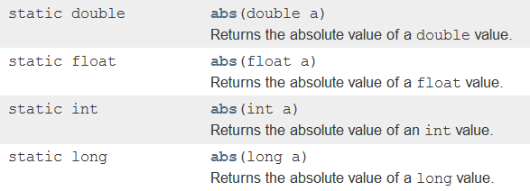
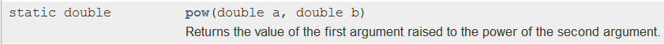
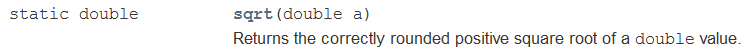
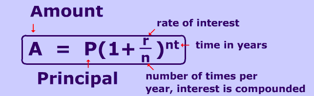

Math Programs
The Math class has a few methods that will do some of the more complex
operations for us, we just need to familiarize ourselves with the parameters and
the return types. Check out the Math methods here, but there are three
that you are required to know:
abs

The first method that we need to memorize is the abs method, which stands for
absolute value. You should see above that there are actually four
different versions, each that takes in a different parameter type. We
recognize the double and int, the other two are data types that we ignore in
this class, but they are essentially a different type of double and int.
The type that is returned matches that of the parameter. If you give it
an int, it should return an int. If you give it a double, it should return
a double.
Consider the following code:
int num = -7;
int absNum = Math.abs(num);
double absNumDub = Math.abs(num);
This will all compile and if run the value of absNum is 7 and absNumDub is
7.0. Since an int is passed into the abs method, an int is guaranteed to
return. This is fine, since an int is easily changed into a double
automatically.
double num = -7;
int absNum = Math.abs(num);
double absNumDub = Math.abs(num);
If the original value is modified to be a double, suddenly the compiler will
have an issue. The second line will not compile because this time the
parameter is a double, thus the return type will be a double. Since absNum
is an int, the resulting double cannot be assigned to it.
pow

Unlike the abs method, the pow method always takes in doubles and returns
doubles. This method has two parameters, the first being the base
and the second being the exponent. The result is always returned
as a double.
double power = Math.pow(2,3);
Even though the parameters are both ints, the compiler will be fine and
transform them into doubles. After the code has run, 8 will be stored in
the power variable ( 2 to the 3rd power).
sqrt

The sqrt method will calculate the positive square root of whatever was
passed in as a parameter.
double root1 = Math.sqrt(2);
double root2 = Math.sqrt(-1);
At the end of this code, root1 will have the value 1.41... and root2 will
have the value NaN, which stands for Not a Number. This
is because the square root of a negative number is imaginary. We will not
deal with NaN much, but be aware of what it means in case you come across it
again.
Assignments
Each of the following programs will use the Math class in some way.
Either they will use the constant Math.PI or they will use one of Math's methods
to get the appropriate answer.
1) Inaccuracies: Create a program named Inaccuracies. This program is meant to display one of the issues
that arrises when using doubles. It will have no input, but its main
method should do the following:
- create a double named num and assign to it the value 0.7
- use the *= operator to multiply num by 3 and assign it back into num.
- logically .7*3 should store a 2.1 into num, but it will not exactly.
Subtract and print out the difference between 2.1 and
calculated num.
The resulting number is in scientific notation, the last few characters
should be E-16, meaning it's so small that its multiplier is 10-16
2) CircleStats: This program will prompt the user for the radius of a
circle, and then print out its circumference and area. In order to
represent the value of pi, there is actually a constant in the
Math class that will help you out. Simply use Math.PI as a value in your
calculations ( Math.PI - 24, is like saying 3.14159... - 24)
For Example: If the radius is 6, the output will be the following:
The circumference of the circle is 37.69911184307752 and its area is
113.09733552923255.
3) Distance: The Distance formula is used to find the distance between two
coordinates (x1,y1) and (x2,y2)

Prompt the user for all four values (x1,y1,x2,and y2), and then calculate the
distance between them. You may use the following strategy:
Find the square of x2-x1 and the square of y2-y1 and store the results into dX
and dY.
Calculate the square root of dX plus dY, and print it out as a result.
Enter x1:
1
Enter y1:
-3
Enter x2:
4
Enter y2:
7
The distance between (1,-3) and (4,7) is 10.4403
4) CompoundInterest:
Interest on loans can add up quickly. In order to calculate the amount
that you're actually paying, you need to know the Principal amount, the rate of
interest, the number of times per year that the interest is compounded, and how
long it has been (in years).

This program should prompt the user for the Principal value, the interest
rate, the number of times it's compounded per year, and the time in years.
It should then print out the
total amount that will be actually paid. Be careful, you will have to
divide the rate of interest by 100 in order to use it in your calculations.
For example: If Mr. Sacco puts $10,000 in a savings account with an
interest rate of 2.5% (.025), compounded monthly. How much was in the account
after 10 years?
Principal: 10000.0
Interest rate: 2.5%
Compounds per year: 12
Time in years: 10.0
Value: 12836.91